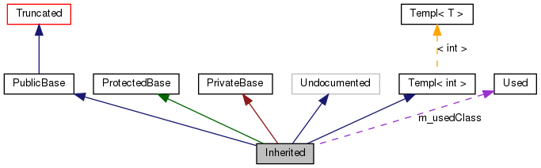

Ova stranica objašnjava kako tumačiti grafikone koje je napravio doxygen.
Na primer:
/*! Klasa nevidljiva zbog trenutnih ograničenja */
class Invisible { };
/*! Klasa kojoj se ne vidi način izvođenja */
class Truncated : public Invisible { };
/* Klasa bez doxygen komentara */
class Undocumented { };
/*! Klasa izvedena iz osnovne klase javnim izvođenjem */
class PublicBase : public Truncated { };
/*! Šablonska klasa */
template<class T> class Templ { };
/*! Klasa izvedena iz osnovne klase zaštićenim izvođenjem */
class ProtectedBase { };
/*! Klasa izvedena iz osnovne klase privatnim izvođenjem */
class PrivateBase { };
/*! Klasa korišćena u nekoj/nekim od drugih klasa */
class Used { };
/*! Klasa izvedena iz više osnovnih klasa */
class Inherited : public PublicBase,
protected ProtectedBase,
private PrivateBase,
public Undocumented,
public Templ<int>
{
private:
Used *m_usedClass;
};
Ako je MAX_DOT_GRAPH_HEIGHT tag u konfiguracionoj datoteci postavljen na 200 graf izvođenja će izgledati ovako:

Graf će biti odsečen ako ne stane unutar zadatih granica.
Pravougaonici imaju sledeća značenja:
-
Puni sivi predstavlja strukturu ili klasu za koju je graf napravljen.
-
Sa crnom ivicom predstavlja dokumentovanu strukturu ili klasu.
-
Sa sivom ivicom predstavlja strukturu ili klasu bez doxygen komentara.
-
Sa crvenom ivicom predstavlja dokumentovanu strukturu ili klasu za koju nisu prikazani svi relevantni grafovi.
Strelice imaju sledeća značenja:
-
Tamnoplava strelica označava javno izvođenje.
-
Tamnozelena strelica označava zaštićeno izvođenje.
-
Tamnocrvena strelica označava privatno izvođenje.
-
Ljubičasta isprekidana strelica označava da je klasa sadržana ili korišćena u drugoj klasi. Strelica je označena imenom atributa preko koga se pristupa klasi/strukturi na koju pokazuje.
-
Žuta isprekidana strelica označava vezu između primerka šablona i šablona klase od kojeg je primerak napravljen. Strelica je označena stvarnim argumentima šablona.